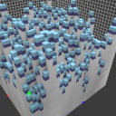
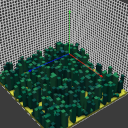
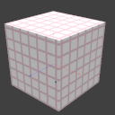
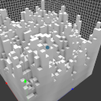
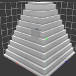
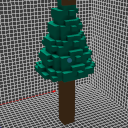
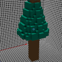

Scripting api
There is a console command (called xs) in voxedit and a command line parameter in voxconvert to execute lua scripts for generating voxels. This command expects the lua script filename (.lua can be omitted) and the additional arguments for the main() method.
If you are new to lua you can read more about it on lua-users.
voxedit
Calling
xs <script> help(in the script console) will print the supported arguments for the given script file in voxedit.
voxconvert
./vengi-voxconvert --script "<script> help" --scriptcolor 1 --input in.qb --output out.qb
--scriptcolordefines the color palette index that is given to the script as parameter.
By default the script files will be searched in a scripts folder next to where the binary is located and in the usual search paths (see configuration for more details). You can also give the full path to the script file.
There are two functions in each script. One is called arguments and one main. arguments returns a list of parameters for the main function. The default parameters for main are node, region and color. color is the palette index starting from 0 (the selected color in the palette panel in voxedit or the specified color index in voxconvert as given by --scriptcolor).
So the first few parameters are the same for each script call. And the script defines any additional parameter for the main function by returing values in the arguments function.
Examples
Without parameters
function main(node, region, color)
local volume = node:volume()
local mins = region:mins()
local maxs = region:maxs()
for x = mins.x, maxs.x do
for y = mins.y, maxs.y do
for z = mins.z, maxs.z do
volume:setVoxel(x, y, z, color)
end
end
end
end
Execute this via console xs scriptfile
With one parameter
function arguments()
return {
{ name = 'n', desc = 'height level delta', type = 'int', default = '2' }
}
end
function main(node, region, color, n)
[...]
end
Execute this via console xs scriptfile 1 where 1 will be the value of n. Omitting the 1 will add the default value from the argument list.
Download a file and import it
local function basename(str)
local name = string.gsub(str, "(.*/)(.*)", "%2")
return name
end
function main(_, _, _)
local url = "https://github.com/vengi-voxel/vengi/raw/9c101f32b84f949ed82f7545883e80a318760580/data/voxel/guybrush.vox"
local filename = basename(url)
local stream = g_http.get(url)
g_import.scene(filename, stream)
end
Find the best palette match
function main(node, region, color)
-- find match (palette index) for red in the current palette (RGB value)
-- this value can be used in e.g. volume:setVoxel(x, y, z, match)
local match = node:palette():match(255, 0, 0)
[...]
end
This will find the best match in the currently used palette and return the index.
Arguments
Supported types are:
-
int:min,maxvalues are supported, too -
float:min,maxvalues are supported, too -
enum:enumas a property specifies a list of string separated by, -
str: string input -
colorindex: a color index from current palette (clamped) -
bool:
The description field is just for the user interface of the script parameter list.
A default value can get set, too.
The order in the arguments table defines the order in which the arguments are passed over to the script.
SceneGraph
g_scenegraph lets you access different nodes or create new ones.
The functions are:
-
align(): Allow to align all nodes on the floor next to each other without overlapping. -
new(name, [region], [visible], [type=group]): Creates a new node with the givenname, the size and position according to theregionand an optionalvisibleparameter. Ifregionis given a model is created - otherwise a group node. Valid values fortypearegroup,pointandcamera(the default isgroup). -
get([nodeId]): Returns thenodefor the givennodeId- if thenodeIdis not given, it will return the current active node. Which by default is the node for the volume the script is currently executed for. -
getByName(name): Returnsnilif no node with the given name exists -
getByUUID(uuid): Returnsnilif no node with the given uuid exists -
activeAnimation(): Return the current active animation -
setAnimation(string): Activate the animation -
addAnimation(string): Add a new animation -
duplicateAnimation(animation, newAnimationName): Add a new animation by duplicating the given animation -
hasAnimation(string): Check if the animation exists -
nodeIds(): Returns a table with all node ids of the current scene graph.
local allNodeIds = g_scenegraph.nodeIds()
for i, nodeId in ipairs(allNodeIds) do
-- Do something with each nodeId
end
updateTransforms(): Update the key frame transforms when they are dirty after changing values (seeKeyframe)
SceneGraphNode
-
addAnimation(string): Add a new animation -
addKeyFrame(frame): Add a new key frame for frame number and return it. E.g.addFrame(20)will add a new key frame for the frame 20. -
hasKeyFrameForFrame(frame): -
id(): Returns the id of the current node -
clone(): Clones the current node -
uuid(): Returns the uuid of the current node -
isCamera(): Returns true if the node is a camera node -
isGroup(): Returns true if the node is a group node -
isModel(): Returns true if the node is a model node (it has a volume attached) -
isPoint(): Returns true if the node is a point node -
isReference(): Returns true if the node is a model reference -
keyFrame(keyFrameIdx): Returns an existing keyframe (see below) -
keyFrameForFrame(frame): Returns an existing keyframe that has a frame number <= the given frame -
name(): Returns the current name of the node. -
setName(string): Set the name of the node. -
palette(): Returns the current palette of the node. -
parent(): Returns the id of the parent node - or-1if no parent exists (root node) -
removeKeyFrameForFrame(frame): Remove the keyframe for the given frame. Throws an error if no key frame with the given frame exists. -
removeKeyFrame(keyFrameIdx): Remove the existing key frame at the given index. Throws an error if the index is invalid or the key frame doesn't exist. -
setPalette(palette, [remap]): Change the palette or if remap is given and is true it remaps to the new palette -
setPivot(vec3),setPivot(x, y, z): -
volume(): Gives you access to the volume of a model node.
Access these functions like this:
local scenegraphnode = [...]
local name = scenegraphnode:name()
Keyframe
Valid interpolation strings
- Instant
- Linear
- QuadEaseIn
- QuadEaseOut
- QuadEaseInOut
- CubicEaseIn
- CubicEaseOut
- CubicEaseInOut
-
index(): Returns the key frame index -
frame(): Returns the frame for this key frame object -
interpolation(): Returns interpolation string -
setInterpolation(string): Set the interpolation for this key frame - must be a valid string -
localScale(): Returns the local scale vector -
setLocalScale(vec3),setLocalScale(x, y, z): -
localOrientation(): Returns a quaternion object -
setLocalOrientation(quat),setLocalOrientation(x, y, z, w): -
localTranslation(): Returns a vec3 object -
setLocalTranslation(vec3),setLocalTranslation(x, y, z): -
worldScale(): Returns a vec3 object -
setWorldScale(vec3),setWorldScale(x, y, z): -
worldOrientation(): Returns a quaternion object -
setWorldOrientation(quat),setWorldOrientation(x, y, z, w): -
worldTranslation(): Returns a vec3 object -
setWorldTranslation(vec3),setWorldTranslation(x, y, z):
NOTE After you've modified something on a key frame, you have to call
g_scenegraph.updateTransforms()!
Palette and material
The node palette (node:palette()) has several methods to work with colors. E.g. to find a closest possible match for the given palette index.
The functions are:
-
color(paletteIndex): Pushes the vec4 of the color behind the palette index (0-255) as float values between0.0and1.0. -
colorString(paletteIndex): Return a color string for logging to the console (includes ansi color escape sequences). -
rgba(paletteIndex): Pushes the four values of the color behind the palette index (0-255). -
colors(): Returns the palette RGBA colors as vec4 values between0.0and1.0. -
load(palette): Allows to load a built-in palette or a filename to a supported palette format. -
material(paletteIndex, material): Get the value of the material property for the given palette index.Valid material names
-
match(r, g, b, [skipIndex]): Returns the closest possible palette color match for the given RGB (0-255) color. The returned palette index is in the range0-255. This value can then be used for thesetVoxelmethod.skipIndexis not taken into account when doing the search. -
setColor(paletteIndex, red, green, blue, [alpha]): Change the color of a palette entry to the given rgba values in the range[0-255]. -
setMaterial(paletteIndex, material, value): Set the value of the material property for the given palette index.Valid material names
-
similar(paletteindex, [coloramount]): Return a table with similar colors given by their palette index.
They are available as e.g. palette:color([...]), palette:match([...]) and so on.
You can create new palettes with the g_palette global by calling e.g.
local pal = g_palette.new()
pal.load("built-in:minecraft")
Noise
The global g_noise supports a few noise generators:
-
noise2(v),noise3(v),noise4(v): Simplex noise. Uses the givenvec2,vec3orvec4and returns a float value between0.0and1.0. -
fBm2(v, octaves, lacunarity, gain),fBm3(v, octaves, lacunarity, gain),fBm4(v, octaves, lacunarity, gain): Simplex noise fractal brownian motion sum. Uses the givenvec2,vec3orvec4and returns a float value between0.0and1.0. -
ridgedMF2(v, offset, octaves, lacunarity, gain),ridgedMF3(v, offset, octaves, lacunarity, gain),ridgedMF4(v, offset, octaves, lacunarity, gain): Simplex ridged multi-fractal noise sum. Uses the givenvec2,vec3orvec4and returns a float value between0.0and1.0. -
swissTurbulence(vec2, offset, octaves, lacunarity, gain, warp): blog post -
voronoi(vec3, [frequency, seed, enableDistance]): Voronoi noise. -
worley2(v),worley3(v): Simplex cellular/worley noise. Uses the givenvec2orvec3and returns a float value between0.0and1.0.
They are available as e.g. g_noise.noise2([...]), g_noise.fBm3([...]) and so on.
Shape
The global g_shape supports a few shape generators:
-
cylinder(centerBottom, axis, radius, height, voxel): Create a cylinder at the given position. The position is the center of the bottom plate with the givenaxis(yis default) as the direction. -
torus(center, minorRadius, majorRadius, voxel): Create a torus at the given position with the position being the center of the object. -
ellipse(centerBottom, axis, width, height, depth, voxel): Create an ellipse at the given position. The position is the center of the bottom plate with the givenaxis(yis default) as the direction. -
dome(centerBottom, axis, negative, width, height, depth, voxel): Create a dome at the given position. The position is the center of the bottom plate with the givenaxis(yis default) as the direction.negative: if true the dome will be placed in the negative direction of the axis. -
cone(centerBottom, axis, negative, width, height, depth, voxel): Create a cone at the given position. The position is the center of the bottom plate with the givenaxis(yis default) as the direction.negative: if true the cone will be placed in the negative direction of the axis. -
line(start, end, voxel): Create a line. -
cube(position, width, height, depth, voxel): Create a cube with the given dimensions. The position is the lower left corner. -
bezier(start, end, control, voxel): Create a bezier curve with the givenstart,endandcontrolpoint
They are available as e.g. g_shape.line([...]), g_shape.ellipse([...]) and so on.
Region
-
contains(region): Check whether the current region contains the given one. The test is inclusive such that a region is considered to be inside of itself. -
intersects(region): Check whether the current region intersects with the given one. -
mins(): The lower boundary of the region (inclusive). -
maxs(): The upper boundary of the region (inclusive). -
size(): The size of the region in voxels (ivec3). -
setMins(mins): The lower boundary of the region - given asivec3(atm only available for palettes created withnew). -
setMaxs(maxs): The upper boundary of the region - given asivec3(atm only available for palettes created withnew). -
isOnBorder(pos): Checks whether the givenivec3is located on the border of the region. -
x(): The lower x boundary of the region. -
y(): The lower y boundary of the region. -
z(): The lower z bounary of the region. -
width(): The width of the region measured in voxels. -
height(): The height of the region measured in voxels. -
depth(): The depth of the region measured in voxels.
Access these functions like this:
local region = [...]
local mins = region:mins()
To create new regions, you can use the g_region.new function which needs the lower and upper boundaries. For example
local myregion = g_region.new(0, 0, 0, 1, 1, 1) -- creates a region with 8 voxels
local myregion = g_region.new(0, 0, 0, 0, 0, 0) -- creates a region with 1 voxels
Volume
-
voxel(x, y, z): Returns the palette index of the voxel at the given position in the volume[0-255]. Or-1if there is no voxel. -
region(): Return the region of the volume. -
text(ttffont, text, [x], [y], [z], [size=16], [thickness=1], [spacing=0]): Renders the giventext.x,y, andzare the region lower boundary coordinates by default. -
fillHollow([color]): Tries to fill all hollows in the volume. -
hollow(): Removes non visible voxels. -
importHeightmap(filename, [underground], [surface]): Imports the given image as heightmap into the current volume. Use theundergroundandsurfacevoxel colors for this (or pick some defaults if they were not specified). Also seeimportColoredHeightmapif you want to colorize your surface. -
importColoredHeightmap(filename, [underground]): Imports the given image as heightmap into the current volume. Use theundergroundvoxel colors for this and determine the surface colors from the RGB channel of the given image. Other than withimportHeightmapthe height is encoded in the alpha channel with this method. -
importImageAsVolume(filename, [filename_depthmap], [palette], [depth], [bothsides]): Imports the given image as volume with the depth values read from the given depth map image file. If nofilename_depthmapis given we are looking for the the same filename as given viafilenamebut with a-dmas postfix. Example:filenameisfoo.png- then the defaultfilename_depthmapisfoo-dm.png. -
crop(): Crop the volume and remove empty spaces. -
mirrorAxis([axis]): Mirror along the given axis -yis default. -
move(x, [y], [z]): Move the voxels by the given units without modifying the boundaries of the volume. -
rotateAxis([axis]): Rotate along the given axis -yis default. -
translate(x, [y, z]): Translates the region of the volume. Keep in mind that this is not supported by every output format. -
resize(x, [y, z, extendMins]): Resize the volume by the given sizes. IfextendsMinsistruethe region dimensions are also increased on the lower corner. -
setVoxel(x, y, z, color): Set the given color at the given coordinates in the volume.colormust be in the range[0-255]or-1to delete the voxel.
Access these functions like this:
local volume = [...]
local region = volume:region()
Vectors
Available vector types are vec2, vec3, vec4 and their integer types ivec2, ivec3, ivec4.
Access these functions like this:
local v1 = g_ivec3.new(1, 1, 1)
There are 3 possible components for this vector. You can also call g_ivec3.new(1) to fill all three values with a one. Or call it like this: g_ivec3.new(1, 2) to create a vector with the three components of 1, 2, 2.
Quaternion
For creating quaternions, you can use g_quat.new()
-
rotateXYZ(x, y, z): Rotates the object along the X, Y, and Z axes by the specified angles. -
rotateXY(x, y) -
rotateYZ(y, z) -
rotateXZ(x, z) -
rotateX(x): Rotates the object along the X axis by the specified angle. -
rotateY(y): Rotates the object along the Y axis by the specified angle. -
rotateZ(z): Rotates the object along the Z axis by the specified angle.
HTTP
You can perform http requests from within the lua script to query apis or download files
local stream, responseHeaders = g_http.get("https://example.localhost")
local str = stream:readString()
print(str)
for k, v in pairs(responseHeaders) do
print("key: " .. k .. ", value: " .. v)
end
local requestHeaders = {}
local stream, responseHeaders = g_http.get("https://example.localhost", requestHeaders)
local body = "my body"
local stream, responseHeaders = g_http.post("https://example.localhost", body)
local str = stream:readString()
print(str)
for k, v in pairs(responseHeaders) do
print("key: " .. k .. ", value: " .. v)
end
-
post(url, body, headers: Execute a post request -
get(url, headers): Execute a get request
Importer
g_import is a global that offers the ability to load images and palettes or imports scene graphs/formats from e.g. http downloads.
-
image(filename, stream): Returns an image that was loaded. -
palette(filename, stream): Returns a palette that was loaded. -
scene(filename, stream): Imports the scene from the given stream into the existing scene (g_scenegraph). -
imageAsPlane(filename, image): Imports the given image as plane into the current scene graph and returns the node.
Image
Images are loaded by the g_import global.
-
name(): Returns the name of the image -
save(filename): Save the image as file (pngandjpeg)
Streams
When using e.g. the g_http requests, you get stream objects as return values.
-
readString([0-terminated:false]): Reads a string from the stream. If the optional parameter0-terminatedis set totrue, it reads until a null character is encountered otherwise it will read the whole stream as a string. -
readUInt8(): Reads an unsigned 8-bit integer from the stream. -
readInt8(): Reads a signed 8-bit integer from the stream. -
readUInt16(): Reads an unsigned 16-bit integer from the stream. -
readInt16(): Reads a signed 16-bit integer from the stream. -
readUInt32(): Reads an unsigned 32-bit integer from the stream. -
readInt32(): Reads a signed 32-bit integer from the stream. -
readUInt64(): Reads an unsigned 64-bit integer from the stream. -
readInt64(): Reads a signed 64-bit integer from the stream. -
readFloat(): Reads a 32-bit floating-point number from the stream. -
readDouble(): Reads a 64-bit floating-point number from the stream. -
writeString(str, [0-terminated:false]): Writes a string to the stream. If the optional parameter0-terminatedis set totrue, it writes a null character at the end of the string. -
writeUInt8(value): Writes an unsigned 8-bit integer to the stream. -
writeInt8(value): Writes a signed 8-bit integer to the stream. -
writeUInt16(value): Writes an unsigned 16-bit integer to the stream. -
writeInt16(value): Writes a signed 16-bit integer to the stream. -
writeUInt32(value): Writes an unsigned 32-bit integer to the stream. -
writeInt32(value): Writes a signed 32-bit integer to the stream. -
writeUInt64(value): Writes an unsigned 64-bit integer to the stream. -
writeInt64(value): Writes a signed 64-bit integer to the stream. -
writeFloat(value): Writes a 32-bit floating-point number to the stream. -
writeDouble(value): Writes a 64-bit floating-point number to the stream. -
writeStream(stream): Write the data of the given stream to the current stream. -
eos(): returns whether the stream has reached its end -
seek(offset, mode): change the position in the stream -
tell(): returns the current position in the stream -
pos(): alias fortell() -
close(): close the stream and garbage collect (also closes the file - important on windows if you are going to continue to use the same file again) -
size(): returns the size of the stream
IO
g_io can open files for reading and writing and will return a stream instance.
-
sysopen(path, mode): Can be used to open either an absolute path or a path relative to the current working directory. Modes arerandw -
open(path, mode): Will open the file in the home path of the user to read and write files. Modes arerandw
Cvar
g_var.int("cl_gamma")
-
create(name, value, help = nil, nopersist = false, secret = false): Create a new cvar that is persisted by default. -
str(): Returns the string value of the cvar -
bool(): Returns the bool value of the cvar -
int(): Returns the int value of the cvar -
float(): Returns the float values of the cvar -
setStr(value: string): Sets the string value of the cvar -
setBool(value: bool): Sets the bool value of the cvar -
setInt(value: number): Sets the int value of the cvar -
setFloat(value: number): Sets the float values of the cvar
To get a full list of cvars use the console command
cvarlist.
Command
g_cmd.execute("echo test")
execute(cmdline: string): Execute any of the known commands
To get a full list of commands use the console command
cmdlist.
Logging
To use the built-in logging facilities use g_log with info, debug, warn and error
System
The system module is available with g_sys - and includes the following functions
sleep(ms): Sleep the given milliseconds
Other useful information
ygoing upwards - see basics for further details.
Available scripts
animate.lua
Add animations to an existing model if you name the nodes properly.
xs animate.lua
cover.lua
Generates a new voxel on top of others with the current selected color and the specified height.

xs cover.lua 1
grass.lua
Generate grass on top of voxels.

xs grass.lua
grid.lua
Generates a grid with given color, thickness and size.

xs grid.lua 1 1 5 5 5
noise.lua
Generates perlin noise with the frequency and amplitude as parameters with the current selected color.

xs noise.lua 0.3 1.0
pyramid.lua
Generates a pyramid with the current selected color and with each level being 3 voxels high.

xs pyramid.lua 3
thicken.lua
Thickens the voxel - take 1 voxel and convert to 8 voxels (creates a new node for the result).
 
xs thicken.lua 1
others
There are other scripts available in the repository.
Available modules
volume.lua
This module is here to ease the process of visiting all the voxels in a volume
Keep in mind the
-1is an empty voxel
local vol = require "modules.volume"
function main(node, region, color, emptycnt, octaves, lacunarity, gain, threshold)
local visitor = function (volume, x, y, z)
local color = volume:voxel(x, y, z)
if color == -1 then
-- empty voxel
else
-- solid voxel
end
end
local condition = function (volume, x, y, z)
-- add your checks here
return true
end
vol.conditionYXZ(node:volume(), region, visitor, condition)
end